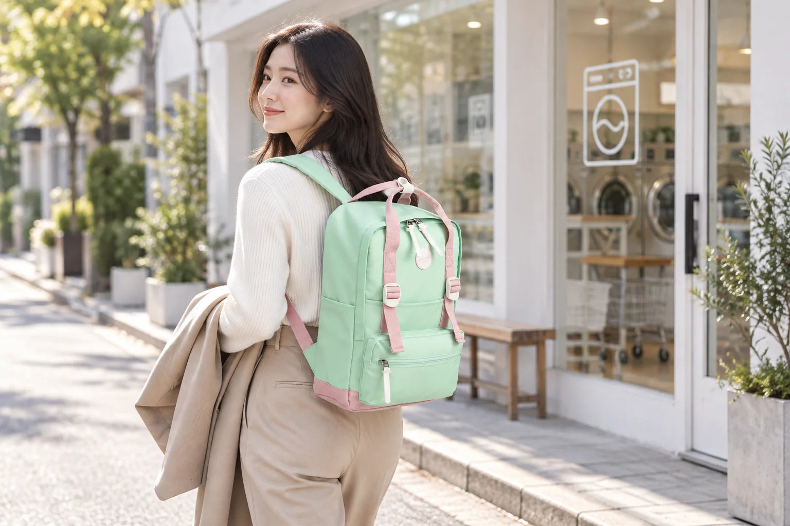
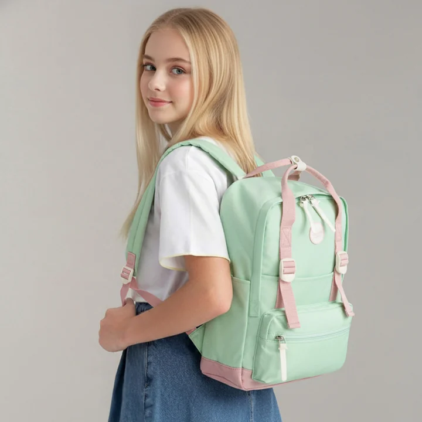

퇴근길 세탁소에 맡길 옷과 남길 짐

퇴근길 세탁소에 들를 날에는 아침부터 평소와 다른 짐을 들고 나갑니다. 백팩에는 업무 자료와 개인 소지품이 있고, 별도로 맡길 옷이 더해집니다. 코트나 부피 있는 옷을 가방에 접어 넣을 생각이라면 기존 짐과 함께 놓였을 때 어떤 물건이 눌릴지 봐야 합니다. 옷을 별도로 운반하면 백팩은 계속 내 곁에 남을 개인 짐의 역할을 유지할 수 있습니다. 맡긴 뒤에는 접수 안내가 새로 생깁니다.
집에서는 옷의 주머니를 먼저 확인합니다. 개인 카드나 종이, 작은 열쇠가 남아 있다면 옷을 접수하기 전에 꺼내 자신의 소지품으로 돌려놓습니다. 장식이나 벨트처럼 별도로 확인할 부분이 있다면 실제 가져갈 구성을 알아두세요. 의류의 관리 표시와 눈에 띄는 상태를 살펴보되 세탁 방식을 임의로 정하는 것은 다음 단계입니다. 처리 가능 여부와 방법은 세탁소에 보여주고 설명을 들은 뒤 결정할 수 있습니다.
아침에 준비할 운반 형태
의류 커버를 쓸지 별도 가방을 쓸지는 옷의 형태와 매장 안내에 따라 판단합니다. 옷이 자연스럽게 들어가고 장식이 다른 물건에 걸리지 않는지 확인하세요. 옷걸이를 함께 가져가는 경우에는 접수 뒤 돌려받는지, 계속 맡기는지 현장에서 물을 수 있습니다. 운반 도구를 정할 때는 출근 중 어디에 둘지와 세탁소에서 옷을 꺼낼 때 필요한 공간도 함께 생각하면 됩니다. 옷을 담는 동작만으로 준비를 마치지 않는 방식입니다.
퇴근 후 들를 매장의 영업시간과 접수 안내를 확인하면 하루 동선이 정해집니다. 시간이 맞지 않을 경우에는 옷을 하루 종일 들고 나가기 전에 다른 방문 일정을 선택할 수 있습니다. 맡길 옷의 상태를 설명할 메모가 있다면 가방의 여러 종이 속에 섞지 않고 바로 찾을 수 있게 둡니다. 연락 수단과 결제에 사용할 물건 역시 옷을 별도로 든 상태에서 꺼낼 수 있는지 한 번 생각해볼 만합니다.
아침의 업무 짐을 담은 가방은 옷을 맡긴 뒤에도 계속 사용합니다. Himawari No.1088M 제품 정보의 그린 모델을 참고한다면 접수에 필요한 연락 도구와 지갑이 평소 자료에 묻히지 않도록 정리할 수 있습니다. 맡길 옷은 별도 운반물로 두고, 세탁소에서 새로 받은 접수 안내가 돌아올 자리를 마련합니다. 옷을 전달한 뒤 백팩에 남는 것은 개인 짐과 수령 정보라는 구분으로 준비하면 됩니다.

회사나 다른 장소에 옷을 잠시 보관해야 한다면 허용되는 위치를 확인합니다. 다른 사람의 통로나 공동 수납 공간을 임의로 차지하지 않고 퇴근할 때 회수할 수 있는 자리를 정하세요. 옷을 책상 아래에 놓았다면 백팩만 메고 나서지 않도록 별도 짐의 개수를 기억해둘 수 있습니다. 아침에 사용한 운반 형태가 저녁까지 유지되는지 살펴보고, 눌리거나 걸린 부분이 있다면 접수 전에 상태를 확인하면 됩니다.
세탁소에서는 옷부터 확인
매장에 도착하면 직원의 안내에 따라 옷을 제시하고 관리 표시와 확인할 부분을 보여줍니다. 오염이나 부속품에 관해 설명할 내용이 있다면 이때 실제 상태와 함께 이야기합니다. 특정 흔적이 반드시 지워질 것이라고 기대하기보다 처리 가능 여부와 주의사항을 확인하고 맡길지를 판단하세요. 방법이나 비용, 예상 수령일은 매장에서 안내받은 내용을 기준으로 남겨두면 귀가 후 기억에만 의존하지 않아도 됩니다.
접수 과정에서는 백팩 전체를 펼칠 필요 없이 확인이나 결제에 필요한 물건만 꺼냅니다. 옷을 꺼내느라 사용한 의류 커버가 남았다면 어디에 둘지, 다시 가져가야 하는지 확인하세요. 작은 매장이라면 커버를 바닥과 통로에 길게 펼치기보다 안내된 위치에서 정리하면 됩니다. 접수할 옷의 수량과 함께 맡기는 부속품이 있다면 서로 확인하고, 설명이 끝난 물건부터 정리하는 방식이 차분합니다.
접수증이나 수령 안내는 받는 형태에 따라 자리를 정합니다. 종이를 받았다면 젖은 우산이나 음료와 직접 닿지 않는 곳에 두고, 전자 안내를 받는다면 다시 확인할 경로를 알아둡니다. 접수표를 사진으로 남길 계획이라면 이름과 연락처가 담기는지도 봅니다. 안내된 수령 방식과 확인 수단이 무엇인지 기록해두면 다음 방문 때 오래된 영수증을 모두 뒤질 필요가 없습니다. 백팩은 임시 보관 장소로 사용하되 계속 남겨둘지는 따로 판단합니다.
옷을 맡긴 뒤 손에 남는 것
옷을 전달한 뒤에는 가져온 운반 가방이나 커버가 남을 수 있습니다. 빈손이 되었다고 생각하고 나오기 전에 무엇을 돌려받았는지 확인합니다. 직원에게 잠시 건넸던 휴대전화나 개인 자료가 있다면 회수하고 백팩의 여밈을 닫습니다. 다음 볼일이 이어진다면 접수증은 그동안 다시 꺼낼 개인 물건과 섞이지 않도록 위치를 유지합니다. 물건을 맡긴 뒤 생긴 빈 공간을 새로운 짐으로 채울 필요는 없습니다.
집에 도착하면 안내받은 수령 예정일과 매장 연락 방법을 개인 일정에 남길 수 있습니다. 종이 접수표를 백팩에서 보관 장소로 옮긴다면 다음 방문 때 어디서 챙길지 정합니다. 가방에 계속 둘 경우에는 다른 가방으로 바꾸는 날에도 함께 옮길 물건에 포함하세요. 접수 안내의 정보와 실제 남은 표식이 맞는지 한 번 대조하면, 수령할 때 다시 문의해야 할 부분이 있는지도 알아볼 수 있습니다.
옷을 찾으러 가는 날에는 안내받은 확인 수단부터 준비합니다. 수령할 옷을 어떻게 운반할지도 접수 때의 형태와 다를 수 있으므로 실제 매장 포장을 보고 결정하면 됩니다. 백팩에 접수표와 커버를 모두 넣어두었다면 필요한 것을 꺼낸 뒤 빈 포장재가 남았는지 확인하세요. 이번 방문에서 기록할 것은 세탁 결과를 미리 예상하는 요령보다 접수와 수령에 쓴 물건의 위치입니다. 다음에도 찾기 쉬운 자리로 돌려놓으면 일상 짐과 섞이지 않습니다.